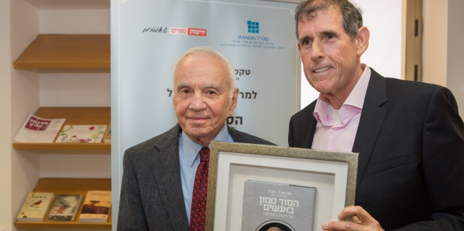

The prize, awarded to Mr. Mandel by Yedioth Books, marked the sale of 40,000 copies of the Hebrew edition of his book "It’s All About Who"
At a festive ceremony held in Jerusalem, Morton L. Mandel, chairman and CEO of the Mandel Foundation, received Yedioth Books' Platinum Book Award from
Dov Eichenwald, the company's Chief Executive Officer, on the occasion of the sale of 40,000 copies of the Hebrew edition of his book
It’s All About Who You Hire, How They Lead… and Other Essential Advice from a Self-Made Leader.
The event was attended by
Professor Jehuda Reinharz, president of the Mandel Foundation;
Mr. Stephen Hoffman, vice chairman of the Mandel Foundation;
Mr. Moshe Vigdor, director general of the Mandel Foundation-Israel; former Knesset member
Mr. Issac Herzog, Chairman of the Jewish Agency for Israel; past and present heads of academic institutions in Israel; and Mandel fellows and graduates.

“Your life mission is inspiring so many people to try and make their dream come true,” said Dov Eichenwald, Chief Executive Officer and publisher of Yedioth Books. “Therefore, it’s not at all surprising that your book got a Platinum Book Award. We are grateful and proud to be the Israeli publisher of such an important book.”
Professor Jehuda Reinharz commented on the secret of the book's success. "The fact is that this is a first time author who sold 40,000 copies, and the question is why? Why is the book so popular?" he asked. "I think part of it has to do with the fact that it's an honest book," he answered, explaining that the book discusses failures as well as successes, which adds to its relevance for its readers. He also cited the book's emphasis on values, which are not always taken into account during the hiring process, as making it particularly compelling for readers.
“I am probably more surprised than anybody else in this room to have sold as many copies as my book sold,” said
Mr. Mandel upon receiving the award. “I’ve been involved in trying to make the world a better place since I was twenty-four years old. I’ve gotten a lot of satisfaction out of being a volunteer and, due of the success of my business life, out of being a philanthropist." He expressed his thanks that his success enabled him to give money to causes that have the potential to create a better world, among them many causes in the State of Israel.
Mr. Mandel had previously received the Golden Book Award from Yedioth Books in 2014, when the sales of his book reached the milestone of 20,000 copies.

{kind=link}